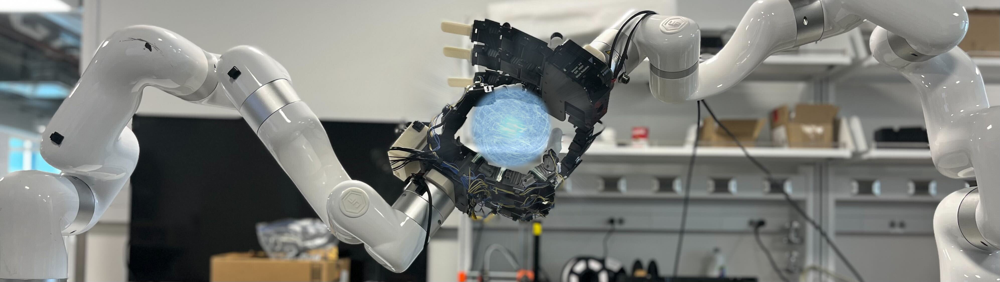
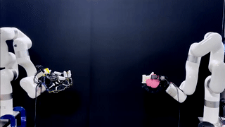
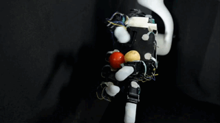
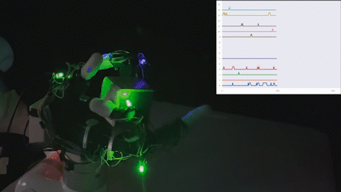
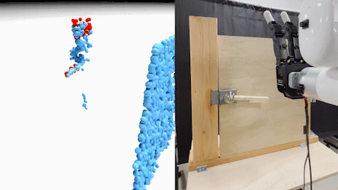
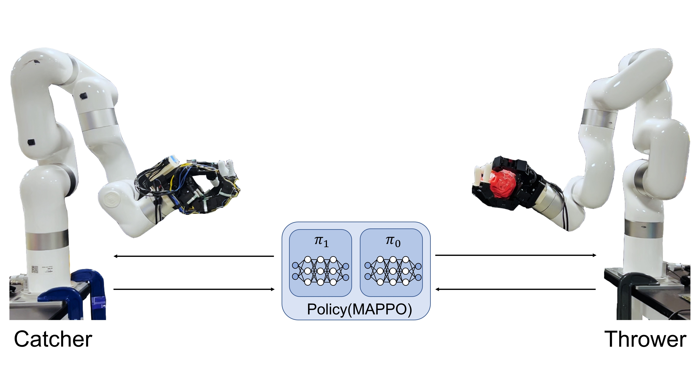
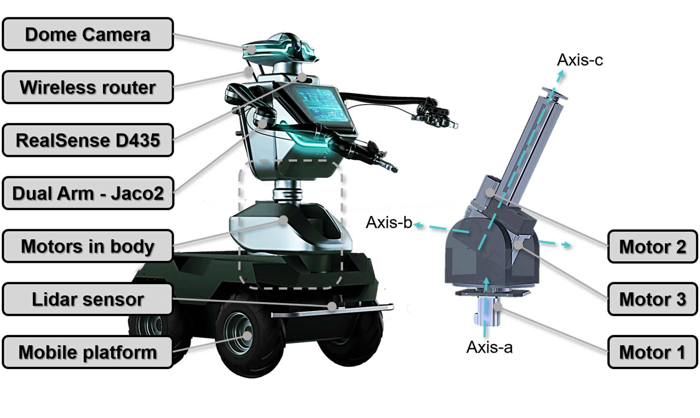

VT-Refine: Learning Bimanual Assembly with
Visuo-Tactile Feedback via Simulation Fine-Tuning
Binghao Huang 1,
Jie Xu2,
Iretiayo Akinola2,
Wei Yang2,
Balakumar Sundaralingam2,
Rowland O'Flaherty2,
Dieter Fox2,
Xiaolong Wang2,3,
Arsalan Mousavian2,
Yu-Wei Chao2†,
Yunzhu Li1†
Conference on Robot Learning (CoRL), 2025
Best Paper Award at IROS 2025 AHFHR Workshop [Link]
[Webpage]
[Paper]
[Video]
[Code]

Intro
I'm a third-year Ph.D. student in CS at Columbia University, advised by Prof. Yunzhu Li. I received M.S. from Mechanical and Aerospace Engineering at UC San Diego, advised by Prof. Xiaolong Wang. I've also had great experiences working at NVIDIA Seattle Robotics Lab. My research interests lie in Robot Learning, Dexterous Manipulation, Multi-Modal Perception.
Email / CV_25.07 / Google Scholar / Twitter / Bilibili Video ChannelNews
• [2025/11] Invited Talk at New York University, General-purpose Robotics and AI Lab . • [2025/11] Invited Talk at Amazon, Frontier AI & Robotics. • [2025/10] Invited Talk at Duke Robotics.• [2025/10] Invited Talk at UPenn GRASP SFI Seminar Series.
• [2025/08] Keynote Speaker at UW AI & Robotics Data Summit.
• [2025/08] One paper is accepted by CoRL 2025.
• [2025/07] Released our new work Touch in the wild and Code. • [2025/07] Invited Talk at Facebook AI Research(FAIR). [Slides]
• [2025/06] Our paper Touch in the Wild is awarded the Best Demo Award at RSS 2025 Workshop on Robot Hardware-Aware Intelligence. [Link]
• [2025/06] Invited Talk at University of Washington, Mechanical Engineering Department. [Slides]
• [2025/05] Started my 2nd time internship at NVIDIA Seattle Robotics Lab
• [2025/05] Check out our newly released Tactile Skin Toolkits here!
• [2025/04] Invited Talk at UMD Multisensory Machine Intelligence Lab .[Slides]
• [2025/02] Invited Talk at Samsung Research America. [Slides]
• [2025/02] Invited Talk at NYC Computer Vision Day 2025.
• [2024/12] In just a month, our tactile sensor has been reproduced and adopted worldwide by both academia and industry: [Twitter Link]
• [2024/11] Released our Corl 2024 paper 3D-ViTac and Tactile Hardware Guide.
• [2024/09] Three papers are accepted by CoRL 2024.
• [2024/06] My new journey will be a CS Ph.D. at Columbia University starting from 2024 Fall, working with Prof. Yunzhu Li.
• [2024/05] Started my internship at NVIDIA Seattle Robotics Lab
Featured Publications
(* indicates equal contribution)
Touch in the Wild:
Learning Fine-Grained Manipulation with a Portable Visuo-Tactile Gripper
Xinyue Zhu*,1,
Binghao Huang *,1,
Yunzhu Li1
[Webpage]
[Paper]
[Video]
[Code]
Conference on Neural Information Processing Systems (NeurIPS), 2025
Best Demo Award at RSS 2025 Workshop on Robot Hardware-Aware Intelligence [Link]
Multi-Modal Manipulation via Multi-Modal Policy Consensus
Haonan Chen,
Jiaming Xu*,
Hongyu Chen*,
Kaiwen Hong,
Binghao Huang,
Chaoqi Liu,
Jiayuan Mao,
Yunzhu Li,
Yilun Du+, and
Katherine Driggs-Campbell+
* Equal contribution, + Equal advising
[Webpage]
[Paper]
[Video]
[Code]
[Dataset]
[Audio]
[Blog]
[Deepwiki]
Featured in Video Friday on
[IEEE Spectrum]

3D-ViTac: Learning Fine-Grained Manipulation with Visuo-Tactile Sensing
Binghao Huang, Yixuan Wang, Xinyi Yang, Yiyue Luo, Yunzhu Li
Conference on Robot Learning (CoRL), 2024
[Webpage]
[Paper]
[Hardware Tutorial]
[Video]





Robot Systems
Tactile Bimanual Manipulation System
If you want to know more about how tactile sensors can benefit your robot system, feel free to contact me. We propose 3D-ViTac, a multi-modal sensing and learning system for dexterous bimanual manipulation. This system features flexible, scalable, low-cost tactile sensors, each finger equipped with a 16 × 16 sensor array. [Hardware Tutorial] [Project] [Paper]
Tactile Dexterous Hand System
We propose Touch Dexterity, a new dexterous manipulation system to perform in-hand object rotation with only touch sensing. On the left, we show our hardware setup with 16 FSR sensors attached to an Allegro hand.Hardware Setup
In-hand Object Rotation
Contact Signal Simulation
Bimanual Hand Robot System
We propose Dynamic Handover, a new bimanual dexterous hands system designed for throwing and catching tasks. The system consists of two Allegro Hands, each individually attached to a separate XArm robot, arranged in a facing configuration.
Hardware Setup
Throwing and Catching in Real
System in Simulation
Humanoid Robot with Peception and Navigation
I have experience in developing a ROS-based control pipeline for a navigation system that utilizes 2D
Lidar and depth cameras. Additionally, I have designed a vision-based tracking method that leverages
object detection algorithms to enable obstacle avoidance for mobile robots.
[paper]
[code]

Hardware Setup
Navigation in Simulation
Navigation in Real World
Work Experience

Robotics Research Intern, NVIDIA
05/20/2025 - 8/15/2025
Mentor:
Yu-Wei Chao,
Jie
Xu,
Iretiayo Akinola,
Wei Yang,
and
Yashraj Narang
Robotics Research Intern, NVIDIA
05/20/2024 - 12/24/2024
Mentor:
Yu-Wei Chao,
Jie
Xu,
Iretiayo Akinola,
Wei Yang,
Xiaolong
Wang,
Arsalan
Mousavian, and
Dieter Fox.
Professional Service
• Conference Reviewer: CoRL, ICLR, RSS, IROS, ICRA• Journal Reviewer: IEEE T-RO, IEEE RA-L, IEEE Signal Processing Letters
• Workshop Organizer: Learning Dexterous Manipulation @RSS 2023
Interests
In addition to my research in Robotics, I am also a content creator with a strong passion for sharing my knowledge of the field. I currently manage a Robotics Video Channel with over 63,000 followers and 4 million views in total. One of my Most Popular Video, which discusses robots combined with brain-computer interfaces, has garnered over 1.84 million views and is widely recognized within the field.
Motor Augmentation
Atlas&MPC
Soft Robot
Update: 2026.02
Credit: web source from Dr. Songfang Han